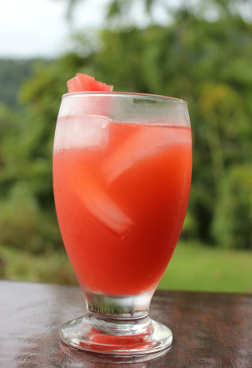

Healthy Juice Cleanse Recipes – Modern Honey
2021.06.18 12:40

Modern Honey
by Melissa Stadler
Home About Me Recipe Index Top 20 Recipes Travel Travel Kauai Travel Guide for Best Things to Do and Eat Best Places to Eat and See in New York City Best Places to Eat and See in Boston Best Places to Eat and See in Seattle California Pacific Coast Highway 1 Road Trip Guide Best Eats and Treats at Disneyland Best Places to Eat in Orange County California How to plan the perfect trip to Magnolia Market in Waco Texas Best Places to Eat in Arizona Healthy Travel Snacks Road Trip Essential Car Kit Best Items to Buy at Trader Joe’s Weekend in Pine Strawberry Arizona ContactHealthy Juice Cleanse Recipes
September 18, 2018 by Modern Honey 99 Comments
18709 shares 12957 5715
Healthy Juice Cleanse Recipes
Four healthy juicing recipes to give your body natural energy and helps to detoxify the body!
Juice bars are popping up everywhere for good reason! Drinking fresh juices can detoxify the body , help to create a more alkaline body , and to give a boost of energy and a clear mind .
Juicing is a powerful tactic used by a quickly-growing amount of people to lose weight fast, get proper nutrition, and help fuel healthy lifestyles.
Whenever I come from vacation or a particularly bad eating night, I reach for a healthy juice to cleanse my body and give my digestive system a break.
I am sharing 4 of our favorite juicing recipes with an assortment of fruits and vegetables for variety. Since my oldest daughter is a “health freak” we make these homemade juices every week and store them in jars in the refrigerator to make them easily accessible. It saves SO much money juicing at home!
What are the health benefits of juicing?
According to the Mayo Clinic, by drinking freshly made juices, your body can absorb the nutrients better than eating whole fruits and vegetables and it gives your digestive system a rest from working on fiber. They say that juicing can reduce your risk of cancer, boost your immune system, help remove toxins from your body, aid digestion and help you lose weight. Fresh juices can give you a burst of energy and a clear mind.
What fruits and vegetables to use for juicing?
Some of the most popular vegetables are carrots, cucumber, celery, kale, spinach, beets, and romaine. The most popular fruits to use in juicing are lemons, oranges, apples, and limes. Other add-ins are fresh ginger, parsley, chlorella, and turmeric.
What are the health benefits of fruits and vegetables in a juice cleanse?
Kale ‚Äì insanely low in calories, powerful anti-oxidant with anti-inflammatory properties, and helpful for arthritis and autoimmune diseases Spinach ‚Äì the beauty of spinach lies in how easy it is to disguise the taste. It‚Äôs mild tasting yet packed with vitamins, has anti-cancerous properties, and is one of the healthiest foods on the planet Cucumber ‚Äì since it‚Äôs 95% water, it‚Äôs an incredible detoxifier and helps with liver and kidney function Lemon ‚Äì one of the most important items to stock in your kitchen as it‚Äôs a highly effective cleansing agent and cuts through the bitterness of greens Carrots known for being a good source of beta-carotene, fiber, vitamin K, and potassium. Carrots have been linked to lower cholesterol levels and improved eye healthCelery low in calories since it is mostly water. It is a low-glycemic food and a good source of dietary fiber, Vitamin A, Vitamin C, and Vitamin K. Beets contain nutrients that may help lower your blood pressure, fight inflammation, and support detoxification. Apples “an apple a day keeps the doctor away” is a famous saying for good reason. Helps to fight inflammation and heart health. Oranges immune system booster since it is high in Vitamin C and low in calories. Turmeric ‚Äì anti-inflammatory and anti-oxidant properties Ginger ‚Äì aids in digestion and supports the immune system
If you are looking for a real detoxifier, check out my recipe for a lemon turmeric drink , which is perfect after a night of bad eating.
If you are searching for blended fruit and vegetable smoothie recipes, click HERE to find my post with 6 Superfood Smoothie Recipes . I went on a 30-day smoothie and juice cleanse to help with my autoimmune disease. You can find out more details in this post .
Where to buy a juicer?
There are many juicers on the market and I have been so impressed with our Breville juicer . If you are looking for a compact, less-expensive Breville juicer, you can find it here .
Here are the fruit and vegetable juice combinations below:
Drink Your Greens : Spinach, Cucumber, Celery, Lemon, Ginger, and Apple (optional: parsley) The Detoxifier : Beets, Carrots, Lemon, Ginger, Apple The Vision : Carrots, Oranges, Ginger (optional: turmeric) Sweet Carrot : Apples, Carrots, and Parsley
I love to hear from you! If you make this recipe, please be sure to leave a comment and give this recipe a rating. If you make any of my recipes, tag me on Instagram @modern_honey so I can see your creations. Also, be sure to tag your photo using the hashtag #modernhoney. It’s one of my favorite things seeing you make these recipes in your own kitchen. Thank you for following along! I truly do have the greatest readers.
FOLLOW ME ON: INSTAGRAM FACEBOOK PINTEREST
Pin on PINTEREST:
4.98 from 39 votes Print Healthy Juice Cleanse Recipes Prep Time 10 mins
Healthy Juice Cleanse Recipes to give you energy, vitality, and health.
Course: Breakfast, Snack Cuisine: American Keyword: juicing recipes Servings : 4 Ingredients Drink Your Greens: 2 cups Baby Spinach Leaves (or 4-6 leaves of kale) 6 Celery 2 large Cucumber 1/2 Lemon 2 medium Apples 1-2 inch Ginger 1/4 - 1/2 cup Parsley Leaves The Detoxifier: 2-3 med-lg Beets 6 Carrots 2 medium Apples 1/2 Lemon 1-2 inch Ginger The Vision: 8 large Carrots 2-3 Navel Oranges 1-2 inch Ginger 1 inch Turmeric (optional) Sweet Carrot: 10 large Carrots 2 medium Apples 1/4 cup Parsley (optional) InstructionsWash, prep, and chop produce.
Add produce to juicer one at a time.
Serve cold over ice. May store in tightly sealed jars or glasses in the refrigerator for 7-10 days. Shake or stir well before drinking.
I hope you love these healthy juice cleanse recipes! Leave a comment below to let me know your favorite juice recipe!
Happy Juicing! Melissa
Related
Filed Under: Breakfast , Healthy , Recipes , Snacks Tagged With: beet juice , carrot apple juice , carrot orange juice , fruit and vegetable juices , green juice recipe , healthy juice cleanse recipes , how to do a juice cleanse , juice cleanse , juicing autoiummune , juicing recipes
The Ultimate Burger
Classic Chocolate Chip Cookies
Chocolate Cake with Vanilla Frosting
Panera Copycat White Cheddar Macaroni and Cheese
Queso Dip
Chicken Enchiladas Suizas
Chocolate Chip Ricotta Pancakes
Barbacoa Beef
Chocolate Bundt Cake
Egg and Bacon Bites
Knotted Rolls
Lemon Ricotta Pancakes
Chocolate Cadbury Egg Cookies
Coconut Cupcakes
Comments
Rose says
July 31, 2020 at 6:53 PM
Can I use canned beets??
ReplySunny johnson says
February 9, 2021 at 11:07 AM
I did a juice: cucumber lime ginger next put in my blender poured in a glass ice and a splash of tonic water as a splicer it was very good as a drink between my daily juicers
ReplyAnita says
August 12, 2020 at 2:24 PM
THANK YOU FOR YOUR HELP IN LEARNING ABOUT JUICING
Chantle says
August 15, 2020 at 6:43 PM
Thank you this is very helpful for me.
ReplyMagali Alicea says
August 26, 2020 at 2:29 PM
Hi, which one do I do for weight loss?
ReplyGissell Jimenez says
August 28, 2020 at 4:06 PM
Thank you so much for sharing!!! I love turmeric detox and the detoxifier the most to lose weight and keeping them off!! Can’t thank you enough: Thank you lots!!
Kendrick Cason says
September 29, 2020 at 3:16 AM
Doing a healthy cleanse can prevent these diseases and even help cure them once they start. It is important to pay attention to what your body is telling you; if you only treat your symptoms, the real problem will go unchecked. Health issues like constipation, gas, bloating, headaches, fatigue, and even hair loss could be signs that your colon is not functioning properly.
christine jimenez says
October 9, 2020 at 11:56 AM
Hello! Would you happen to have a sample juice cleanse menu on which to take when that is safe and effective? Thank you so much
ReplyAngela Fisher says
October 21, 2020 at 8:44 AM
Hello Melissa. Just tried the Detoxifier. It is DELICIOUS! This is my first time juicing. I’m hooked. Can’t wait to try the others.
ReplyAmyF says
January 14, 2021 at 11:55 AM
Hi Angela. How many cups of juice did this make?
Replyshawon emdad says
October 23, 2020 at 5:16 AM
Great article about healthy juice recipes. Thanks for sharing your juicing experience.
ReplyMisha says
October 30, 2020 at 11:07 PM
I just bought a juicer for the first time and googled a recipe and here I am! I had everything for the Green Juice! I was so scared to try it; assuming it would be bitter and nasty. My children were cracking jokes through the entire process and were watching me like hawk as I took my first sip .it was so mild and pleasant and tolerable!!!!! Hallelujah, I will be able to be healthy and ingest the most vegetables my body has ever had, thanks to your recipe! You Rock! Thank You!!
Catherine Barry Miroballi says
December 28, 2020 at 10:47 AM
I just got a Breville juicer for Christmas and am so excited to be juicing my way through 2021!!! Thank you for these recipes!
ReplyLaurie Skiles says
January 1, 2021 at 11:23 AM
I have been using these recipes off and on for a year now. If I stick to them I loose weight easily. And a huge bonus is they taste great!
LaShunda Jones says
January 16, 2021 at 6:11 PM
Hello, how many ounces does one of the juice recipes make? I want to try to juice for an entire day. Thank you.
ReplyTina Herz says
January 2, 2021 at 9:00 AM
Does each recipe serve 4? Or is each recipe 1 Serving?
ReplyBibi says
January 5, 2021 at 10:13 PM
This is very helpful. I knew of some of these but now I know which ones I should be putting together. This is really going to help me a lot with my weightloss journey
ReplyKylie says
January 5, 2021 at 11:05 PM
I loved your helpful hints on juicing could u possibly send more on detoxing it would help me so much,
Kylie
ReplyAnna says
January 13, 2021 at 9:30 AM
Do I juice the lemon with peel and all? Super new to juicing
ReplyStéphane says
January 17, 2021 at 3:28 PM
Hello, and welcome to the world of juicing. It is always best to remove the peel before juicing a lemon am as it will be quite bitter. Enjoy the benefits of juicing.
Replynate says
April 3, 2021 at 2:43 AM
Use Bragg Organic Apple Cider Vinegar in lieu of lemon.
ReplyKristi says
January 17, 2021 at 8:55 AM
When juicing parsley or mint I don’t get much juice.. And find almost intact leaves in the pulp bin?? Any suggestions?
Replynate says
April 3, 2021 at 2:35 AM
Parsley simply cannot be juiced by using ‘regular’ juicers due to its tough fibre.
Norwalk Juicer can juice anything but it’s pricey and heavy [about 60 lbs]. But it’s the best juicer, cream of the crop, I know of and own one.
Try other veggies that are equal to parsley in terms of health benefits. But do not juice fruits period.
Replybrooklyn says
January 17, 2021 at 8:00 PM
Hi there! I would love to try out these juices! We do have a juicer, but its a bit of a pain to clean, (or maybe i’m just too lazy haha) so would it work in a blender? We have a vitamix, so its pretty strong. To make it smoother, using a fine mesh strainer would probably help, too. What are your thoughts? üôÇ
ReplyFemina Jaffer says
May 6, 2021 at 11:47 AM
To juice leafy vegetables, you would need to use masticating juicers. I have the OMEGA and its great; but, there are cheaper ones on Amazon with great reviews.
Another option, but more work. Make your juice in your juicer, then add in the blender with the spinach.
ReplyMatilda says
February 12, 2021 at 7:56 PM
Tried the 4 juice recipes due to trying to be healthier, I have an extensive medical history and I am desperate to feel better. So I found you modern honey!! And let me tell you it was the best thing ever, I went and bought the Breville 3x juicer, best investment ever!! I tried all 4 juice recipes and they are amazing üëèüòã. Thank you for creating these!! Truly a life saver!! I definitely feel the difference.
Imelda says
February 21, 2021 at 4:23 PM
Hi, is each recipe quantity for 4 people? Just wondering as that’s a lot of juice for one person. Or is each recipe for one person? Just need to clarify, thanks. Great recipes thanks for providing
ReplyPatricia O'Toole says
February 23, 2021 at 10:36 AM
I was wondering this myself.
ReplyImelda says
February 23, 2021 at 10:08 PM
Hi Patricia I found out if you follow the quantities but also depending on how big your vegetables and fruit are, each recipe is for 4 serves. I found it made roughly about 1 litre so each serve is 250mls but of course if you use really big beetroots or carrots then it will make more.
ReplyPatricia says
February 24, 2021 at 7:13 PM
Sorry, to clarify is this recipe 4 separate drinks? Or do we mix these all together making 1 litre of juice?
ReplyImelda says
February 27, 2021 at 12:00 AM
Sorry my reply comment is below she has provided 4 different recipes that provide 4 serves each.
Imelda says
February 25, 2021 at 7:40 PM
She has provided 4 different recipes and each recipe is for 4 servings.
ReplyImelda says
February 27, 2021 at 12:01 AM
Amazing juices, I’m having the sweet carrot juice, once again thank you for sharing these juice recipes
Imelda says
March 2, 2021 at 12:25 AM
Having the Vision juice it is DELICIOUS! Actually all of them are delicious thank you again for sharing them
Madison Glover says
March 7, 2021 at 12:49 PM
Great stuff. Thanks!!
ReplyImelda says
March 11, 2021 at 1:08 AM
Hi,
I’ve been having these juices for a long detox. Do you know what the calories are per 250ml for each recipe? Thanks for your time.
Imelda
Kylie says
April 2, 2021 at 7:56 AM
The Detoxifier juice works so well for me. My IBS symptoms have reduced and I feel so light and healthy.
Milly marcus says
April 28, 2021 at 4:39 AM
Thanks my love I love the recipe.its wow
Reply Older CommentsLeave a Reply Cancel reply
FIND A RECIPE!
Welcome to Modern Honey®! I was born to bake. I am a passionate lover of decadent treats + the healthy good stuff. I love to help others be successful in the kitchen and can't wait to share my tried and true recipes with you! Read More…
5 Secrets to the Best Cookies
Tips, techniques & recipes to change your baking forever!
MOST POPULAR RECIPES
For All Things Modern Honey
5 Secrets to the Best Cookies
Tips, techniques & recipes to change your baking forever!
Welcome to Modern Honey®! I was born to bake. I am a passionate lover of decadent treats + the healthy good stuff. I love to help others be successful in the kitchen and can't wait to share my tried and true recipes with you! Read More…
Privacy Policy
http://www.modernhoney.com/privacy-policy/Copyright © 2021 · Foodie Pro Theme by Shay Bocks · Built on the Genesis Framework · Powered by WordPress
- FREE Juice Recipes from Jason Vale - Juice Master
- Healthy Juice Recipes & Challenges | JuiceRecipes.com
- 21 Juicing Recipes for Healthy Mornings and Afternoon .
- Beginner Juice Recipe - Simply Jillicious
- Best Juicing Recipes for Beginners - Clean Eating Kitchen
- 20+ Juice Cleanse Recipes | Allrecipes
- Healthy Juicing Recipe Ideas : Food Network | Healthy .
- 6 Healthy Juicing Recipes for Cleanse, Detox, Weight Loss .
- Healthy Juice Cleanse Recipes – Modern Honey
- 8 Easy Juice Recipes to Get You Started Juicing | Wholefully
- FREE Juice Recipes from Jason Vale - Juice Master
- Healthy Juice Recipes & Challenges | JuiceRecipes.com
- 21 Juicing Recipes for Healthy Mornings and Afternoon .
- Beginner Juice Recipe - Simply Jillicious
- Best Juicing Recipes for Beginners - Clean Eating Kitchen
- 20+ Juice Cleanse Recipes | Allrecipes
- Healthy Juicing Recipe Ideas : Food Network | Healthy .
- 6 Healthy Juicing Recipes for Cleanse, Detox, Weight Loss .
- Healthy Juice Cleanse Recipes – Modern Honey
- 8 Easy Juice Recipes to Get You Started Juicing | Wholefully
